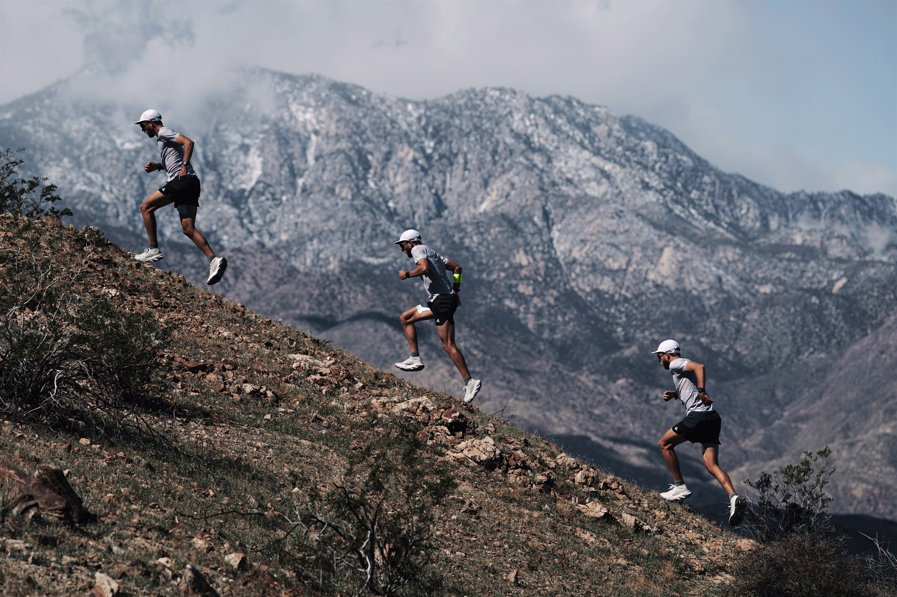
Over 25 professional trail runners from the United States, France, Japan, Korea, and beyond arrived in Palm Springs for the ACG Racing Department's winter performance camp. Rain and shine, they clocked some of their biggest volume of the year to date on the rugged desert terrain of the Coachella Valley — surrounded by scientists, designers, and engineers who came to listen, measure, and learn.
This year the camp was organized by Nike Innovation in conjunction with Nike Sports Marketing, with the API team from the NSRL leading the charge on the performance science agenda. They queried the athletes in advance — finding out exactly where their curiosities and needs lived — and built a week around it.
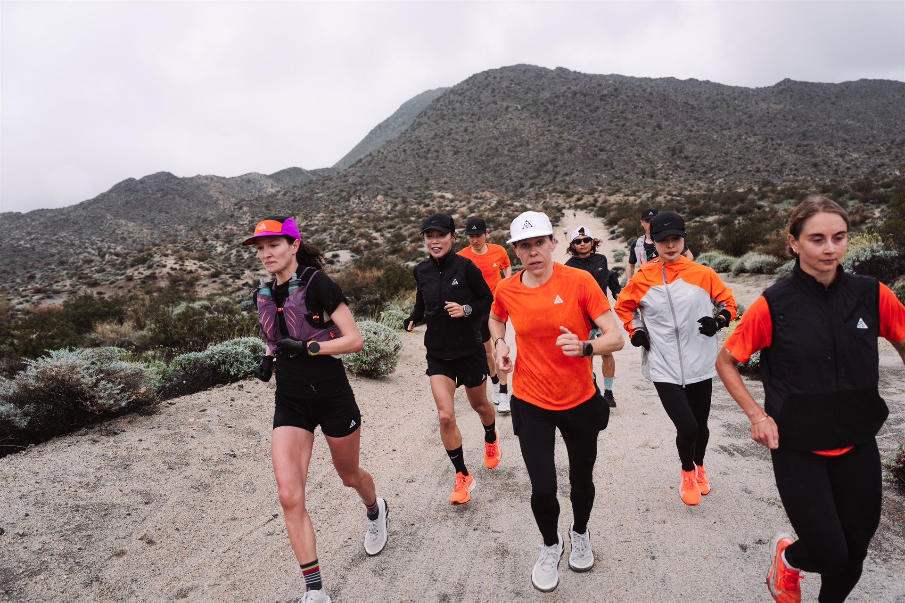
Each day followed a cadence designed to balance training, testing, learning, and recovery.
These athletes are unlike other runners. They don't just cover ground — they climb it. Specialists ranging from 20-minute vertical kilometer racers to 20-hour ultramarathon runners, the common thread is the mountain itself.
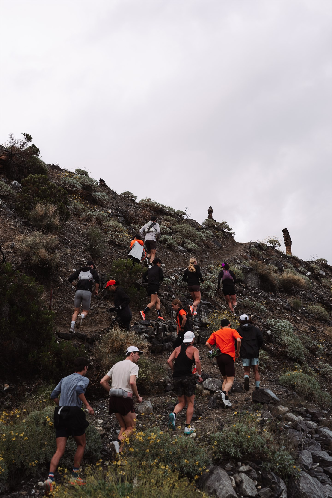
Trail running is one step closer to human survival than most other endurance sports. The durations are ultra-long, the terrain is unforgiving, and the cognitive load is relentless — every footstrike on unstable ground is a real-time risk calculation.
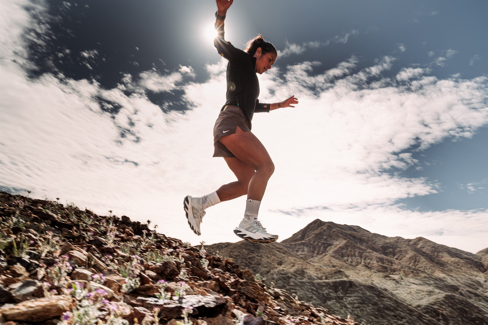
The API team set up a mobile performance lab at the Ritz Carlton Rancho Mirage and ran four concurrent research protocols throughout the week. The aim wasn't just to test — it was to build a comprehensive physiological profile of the trail runner, coupling who they are with what the sport demands.
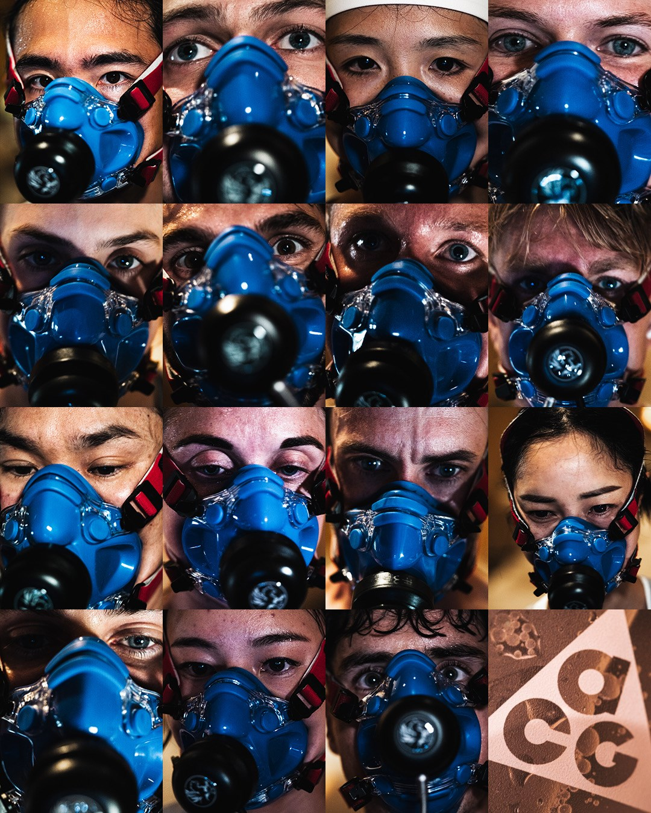
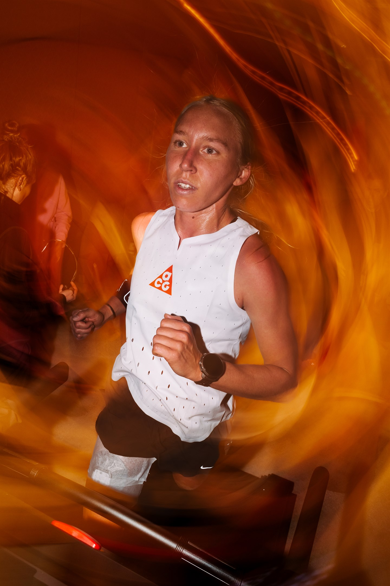
Trail running isn't just physical. At hour 15, fatigued and deep in the mountains, these athletes are still making split-second decisions — will that rock hold my weight? Can I cut this switchback without going over the edge? Should I push this climb and risk paying for it five hours later?
The camp addressed this head-on: morning mindfulness sessions with a performance neuroscientist and a clinical psychologist explored breathwork, sensory grounding, and visualization. Evening seminars around the fire covered topics from altitude adaptation to eccentric muscle loading to overnight fueling strategies.
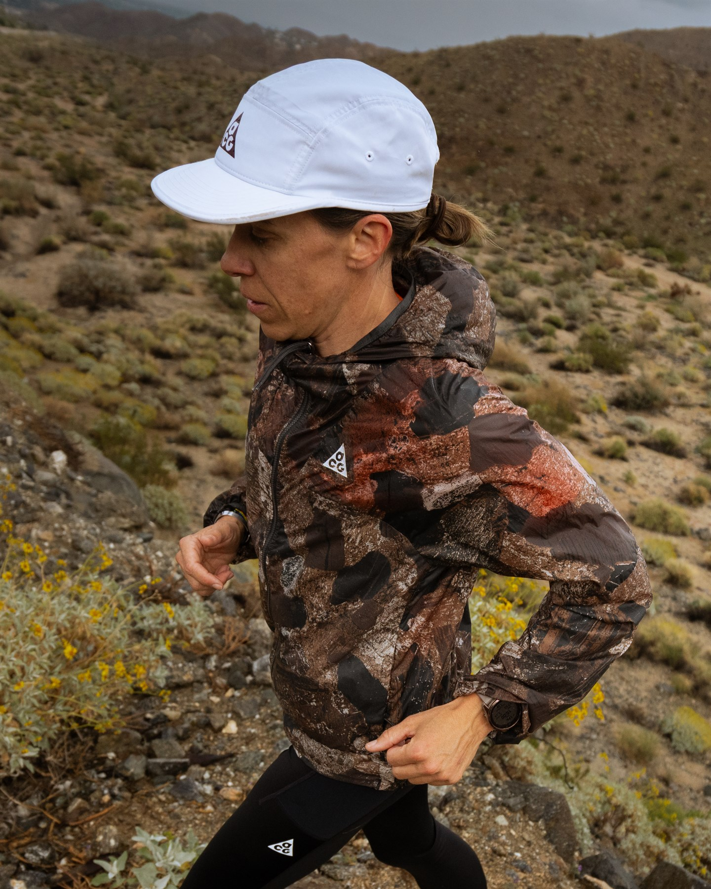
Rather than wiring athletes with EEG headsets, the performance neuroscientist took a different approach — sitting with each athlete individually to explore how they experience cognitive decline during racing, what strategies they use to stay sharp at 3am, and how deeply scrambled their brain feels in the hours and days after a 50K or 100K. Understanding those patterns is a competitive frontier.
One of the week's clearest signals: trail runners think about their gear as a complete system. From shoes to vests to shirts to hats — everything must work together across hours of variable terrain, weather, and effort. The product teams from ACG Footwear, Apparel, and Innovation were embedded all week.
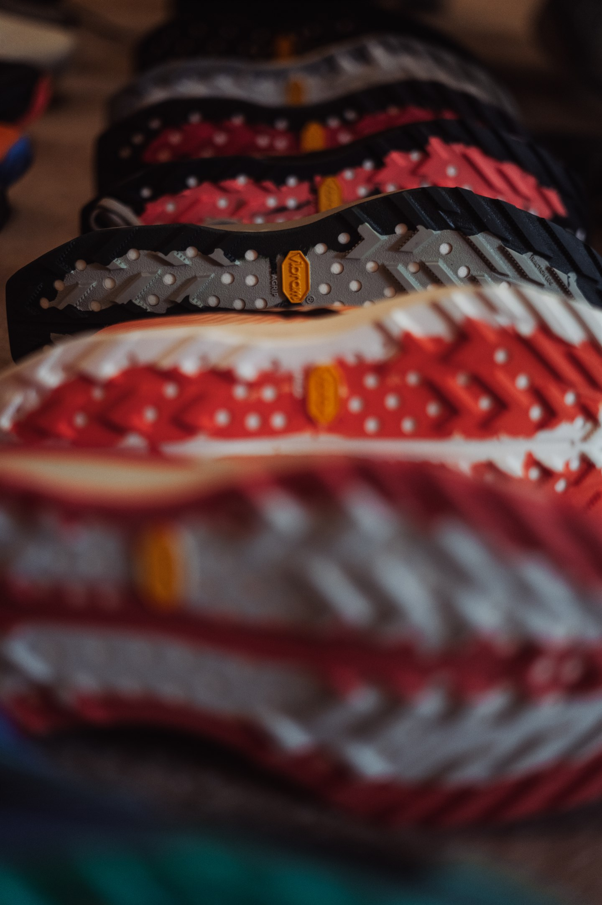
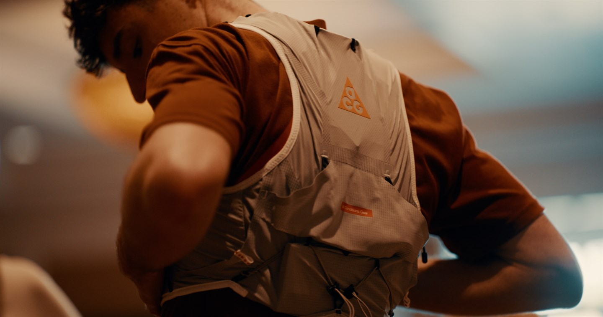
Athletes rotated through product fairs, wear-testing sessions, and direct conversations with designers and developers. Their feedback — about traction, breathability, storage, durability, and fit — feeds directly back into future ACG product creation.
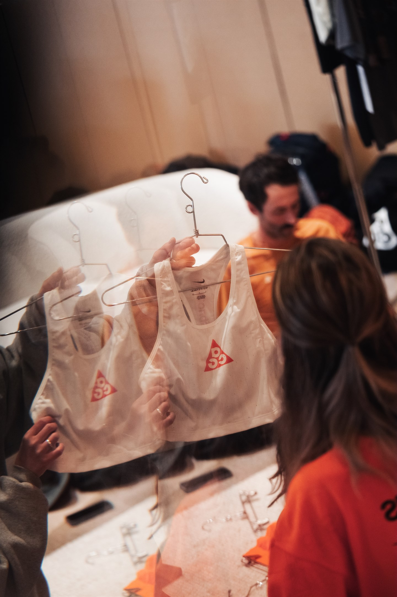
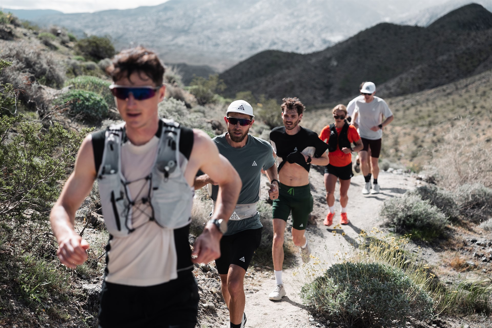
Before camp, the athletes were asked what they most wanted from the week. Their answers shaped the entire agenda.
Five days, four studies, dozens of conversations. The major takeaways from the desert:
From vertical kilometer specialists to 100-mile ultramarathon runners. The global team that came to the desert.
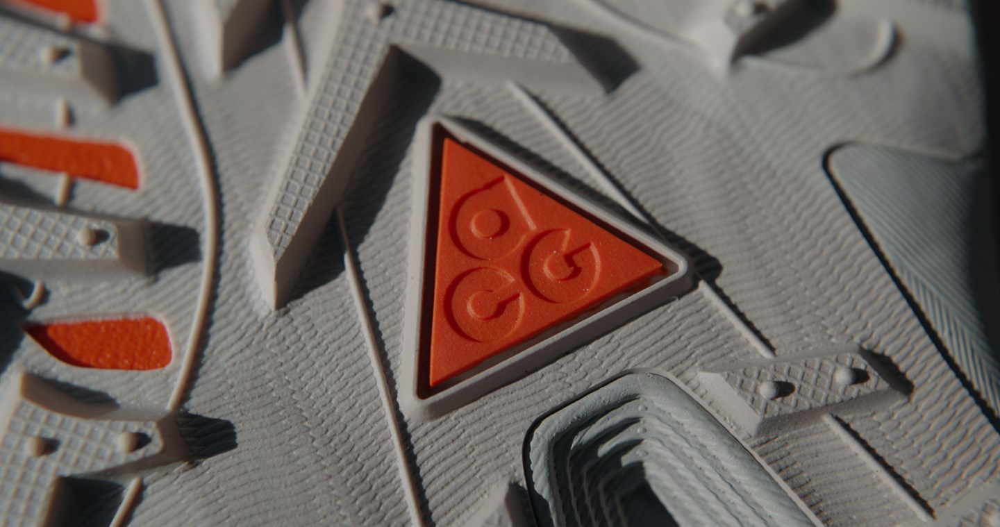